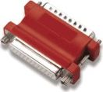
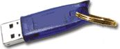

StageRace software is protected by use of a hardware key. Without the hardware key your copy will work in evaluation mode.
A hardware key is a piece of electronics; matchbox sized, or smaller. This key has to be connected to your computer.
We provide two types of keys, namely:

Every modern computer is equipped with such a printer port. An eventual
printer connected can again be connected to the hardware key. Both can
then use the same printer port simultaneously, without trouble.

USB hubs allow for connecting multiple USB devices to your computer
simultaneously. Or possibly your computer is already equipped with sufficient
ports.
Images property of Aladdin® Knowledge Systems
A device driver is required for the hardware key to work. It will be installed during installation process.
Note that only registered users will have a proper hardware key at their disposal. Therefore installation of the device driver is only necessary for registrated users.
StageRace uses a well known brand hardware keys of excellent quality. Whenever the key does not want to work together with your peripheral equipment, please contact your computer dealer. Over the past five years there are no problems known to Totaal Software, arising from the use of this particular type of hardware keys.
Make sure that the hardware key is connected to the correct port and that Stagerace is installed correctly. Next, you can check your hardware key's properties in the menu's box.
When your hardware key is recognized by StageRace, you'll find this information in the particular window:
Detected "Totaal" key no. 12345... (with the unique code of the particular key)
STAGERAC V2.99 01-01-2003 (with the maximal version number for which the particular hardware key is suitable, including the date of issuance of the key)
When your hardware key is not recognized by StageRace, you'll find this information in the particular window:
Invalid or missing hardware key
No registration information available
Ergo, hardware keys for StageRace have an internal version number. Keys can be updated in the future, in order to let you use more up to date program versions. This upgrading can by done by Totaal Software remotely.